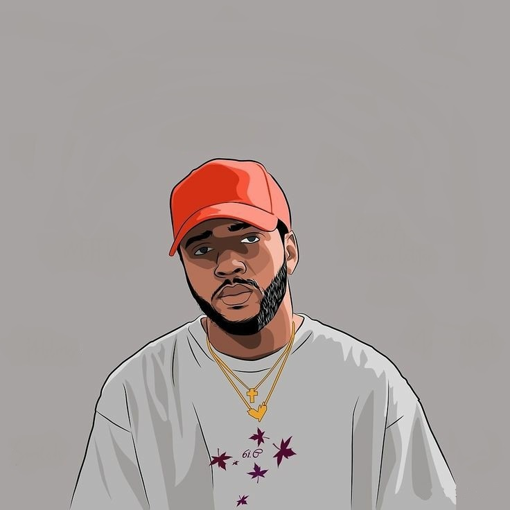

Dicas para melhorar o teu estilo
- Usar óculos de sol pois é verão
- Manter a barba alinhada
- Combinar os óculos com um chapéu


A Gina prefere um estilo mais simples
- De Hoddie branco para lidar com o inverno
- Colantes pretas para a deixar confortável
- Sapatilhas new balance para andar o dia inteiro
Torne-se numa melhor versão
- Com o sol dessa época, uma blusa tropical
- Blusa branca simples e refrescatne
- Óculos de sol azuis, fica lindo e combina

Brilhe de um jeito simples
- Com o sol dessa época, Ana prefere blusa tropical
- Blusa branca simples e refrescatne
- Óculos de sol azuis, que lindos mesmoe e combina